Practica 5 Series de Fourier en tiempo continuo
Grupo: 2TV2
Materia: Señales y Sistemas
Alumnos:
Vargas Cano Cesar David
Toledo Aguado Arturo Emmanuel
Profesor: Dr. Rafael Martínez Martínez
Contents
- Objetivos
- Introduccion
- Ejemplo 6.1
- Ejemplo 6.2
- Ejemplo 6.4
- Ejemplo 6.5
- Ejemplo 6.7
- Elabore un código similar al COMPUTER EXAMPLE C6.2 que se encuentra al final de la sección 6.2 de Lathi para el Ejempo 6.2 con los datos indicados anteriormente (no utilice inline)
- Elabore un código que implemente el algoritmo de trapecio compuesto para 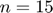, Utilice este código para aproximar 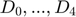 del ejemplo de la práctica. Ahora implemente el código COMPUTER EXAMPLE C6.4 que se encuentra al final de la sección 6.6 de Lathi, y calcule nuevamente el los coeficientes del ejemplo propuesto. Muestre una tabla que contenga los coeficientes mencionados calculados con los dos algoritmos y de forma exacta, ¿Qué algortmo aproxima mejor a los coeficientes?, para esto compare los coefientes con el valor absoluto de la resta.
Objetivos
- Realizar gráficas de series de Fourier exponenciales y trigonométricas en tiempo continuo
- Manipulación de instrucciones en MATLAB
- Calculo númerico de los coeficientes de Fourier7
Introduccion
Series trigonométricas y series de Fourier. Coeficientes de Fourier
Toda serie funcional que se pueda expresar en la forma:
La serie trigonométrica que tiene estos coeficientes se denomina serie de Fourier de f en [0, T]. Cuando la función f es además periódica de período T, la serie citada se denomina simplemente serie de Fourier de f. Para construir la serie de Fourier de una función sólo hay que calcular sus coeficientes, y para ello, de acuerdo con la Definición 1, basta con que f sea integrable. Pero hasta ahora no se ha expuesto ningún argumento que permita decidir nada acerca de la convergencia de esta serie, ni tampoco, si la suma es o no la función f. Es decir, una cosa es obtener la serie de Fourier de una función, y otra muy distinta determinar su convergencia y eventualmente su suma. Dejaremos para más tarde estas últimas cuestiones. Obsérvese que, en el caso de ser f una función T-periódica, los integrandos serían funciones de período T, y entonces, de acuerdo con la Proposición A.2 del Apéndice, es posible reemplazar el intervalo de integración por cualquier otro intervalo de longitud T (como por ejemplo, el intervalo [?T /2,T/2]), lo que en ciertas circunstancias puede facilitar el cálculo de los coeficientes de Fourier.
Existe un procedimiento gráfico para estudiar la contribución de cada armónico en una serie de Fourier. Consiste en un diagrama cartesiano en cuyo eje horizontal se representa la frecuencia de cada armónico, y en el vertical la amplitud del mismo. Ello da origen a un diagrama de segmentos verticales que se conoce con el nombre de espectro de líneas. Una simple inspección del mismo da una idea rápida de la velocidad de convergencia de la serie y de la contribución de cada armónico a la onda dada por la serie. Los armónicos que más contribuyen tienen mayores amplitudes, y en el espectro de líneas aparecen representados por segmentos de mayor longitud.
Describimos a continuación otro concepto en relación con las aplicaciones de las series de Fourier. La idea central de toda la teoría de series de Fourier es que en condiciones bastante generales, una función periódica se puede expresar como una “suma” de infinitos armónicos. La convergencia de las series de Fourier hace que los sucesivos armónicos tengan cada vez menor amplitud, por lo que la suma de unos pocos de ellos basta para obtener una buena aproximaciónde la función. Supongamos que tenemos una función periódica y calculamos sus primeros armónicos. Podemos entonces reconstruir aproximadamente la función sumando tantos armónicos como se considere necesario para conseguir la precisión deseada. Este proceso se conoce con el nombre de síntesis de formas de onda y para ponerlo de manifiesto, lo aplicaremos a algunos ejemplos que se describen en el epígrafe A.5 del Apéndice. Obsérvese que en el ejemplo b) podemos conseguir una buena síntesis tomando pocos armónicos, a diferencia de lo que ocurre en los casos a) y c) en los que el número de armónicos necesario es mayor. Ello es debido a que la velocidad de convergencia de la serie de Fourier es tanto mayor (y en consecuencia tanto menor el número de armónicos que se necesitan para la síntesis) mientras más “suave” sea la función, es decir, mientras más derivadas continuas tenga la función.
Ejemplo 6.1
a0= 0.504; an=@(n) 1.008/(1+16*n.^2); bn=@(n) (.504*(8.*n))/(1+16*n.^2); t0=0; tf=pi; f=@(t) exp(-t/2); armo=4; a=-7; b=7; sfc(t0,tf,an,bn,a0,f,armo,a,b)
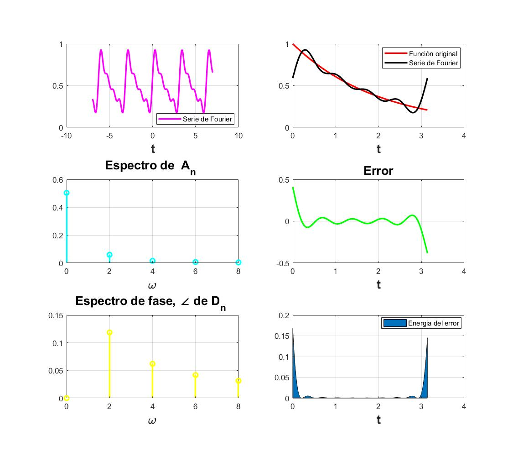
a0= 0.504; an=@(n) 1.008/(1+16*n.^2); bn=@(n) (.504*(8.*n))/(1+16*n.^2); t0=0; tf=pi; f=@(t) exp(-t/2); armo=15; a=-7; b=7; sfc(t0,tf,an,bn,a0,f,armo,a,b)
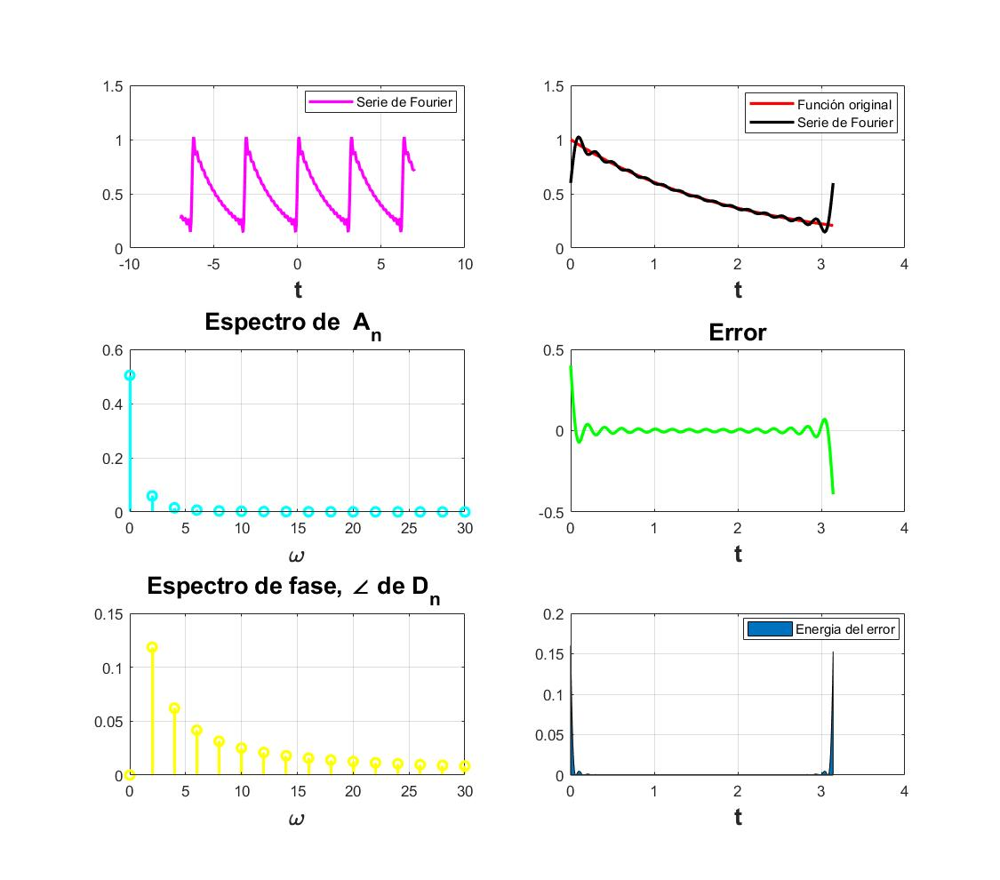
Ejemplo 6.2
d0=0; dn=@(n) (3*(2*(-1).^n -2)*exp((-3*j*pi*n)/2))/(pi^2*n^2); t0=-1/2; tf=3/2; f=@(t) ((6.*t).*(heaviside(t+1/2)-heaviside(t-1/2)))+((6.*(1-t)).*(heaviside(t-1/2)-heaviside(t-3/2))); armo=4; a=-7; b=7; sfc(t0,tf,dn,d0,f,armo,a,b)
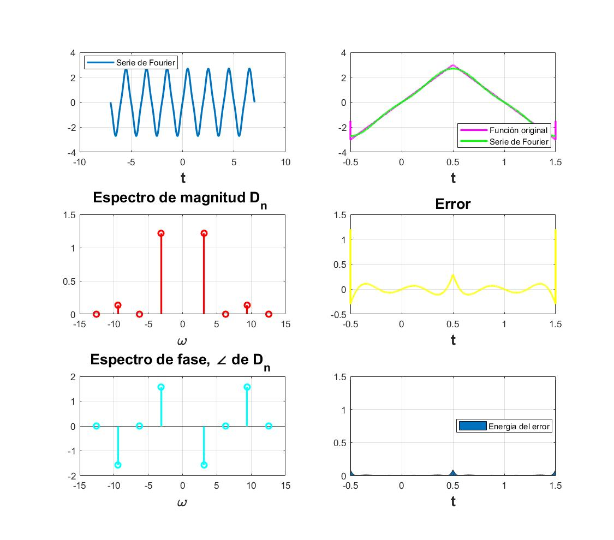
d0=0; dn=@(n) (3*(2*(-1).^n -2)*exp((-3*j*pi*n)/2))/(pi^2*n^2); t0=-1/2; tf=3/2; f=@(t) ((6.*t).*(heaviside(t+1/2)-heaviside(t-1/2)))+((6.*(1-t)).*(heaviside(t-1/2)-heaviside(t-3/2))); armo=15; a=-7; b=7; sfc(t0,tf,dn,d0,f,armo,a,b)
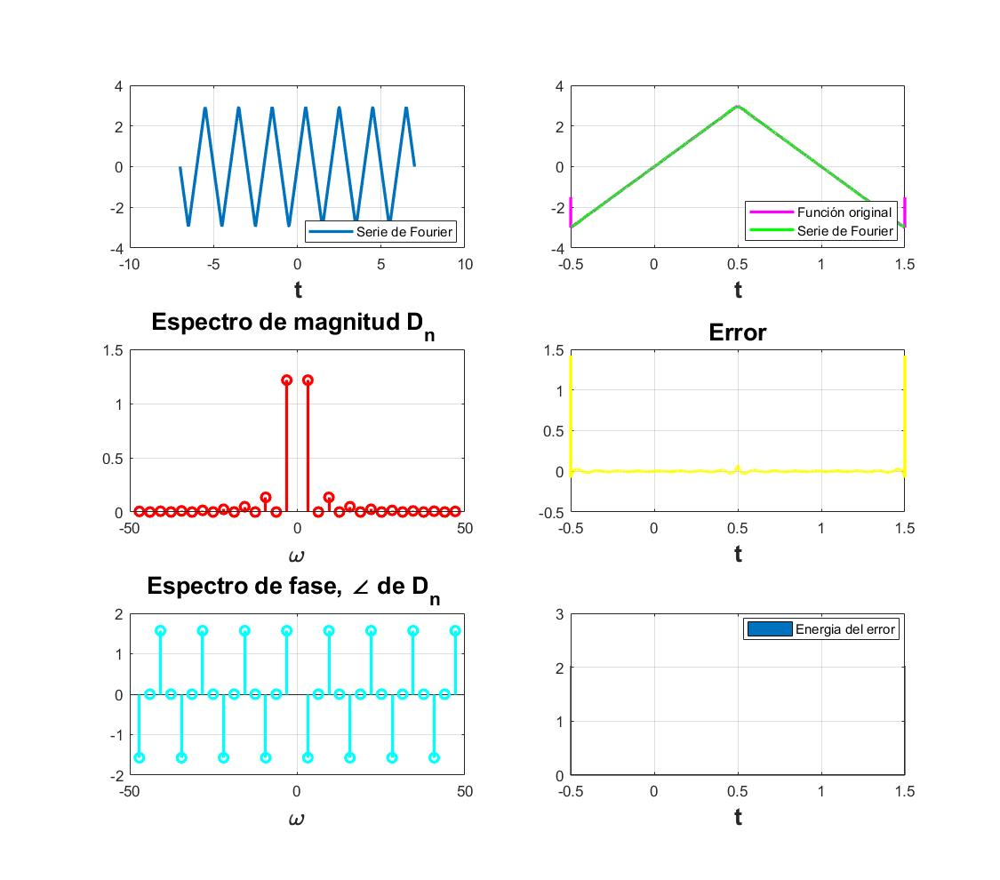
Ejemplo 6.4
d0=1/2; dn=@(n) sin((n*pi)/2)/(pi*n); t0=-pi; tf=pi; f=@(t) heaviside(t+pi/2)-heaviside(t-pi/2); armo=4; a=-15; b=15; sfc(t0,tf,dn,d0,f,armo,a,b)
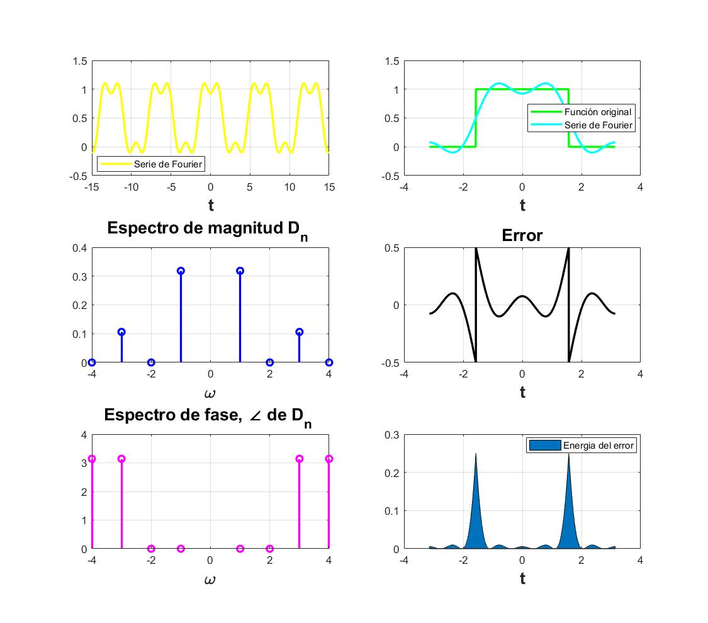
d0=1/2; dn=@(n) sin((n*pi)/2)/(pi*n); t0=-pi; tf=pi; f=@(t) heaviside(t+pi/2)-heaviside(t-pi/2); armo=15; a=-15; b=15; sfc(t0,tf,dn,d0,f,armo,a,b)
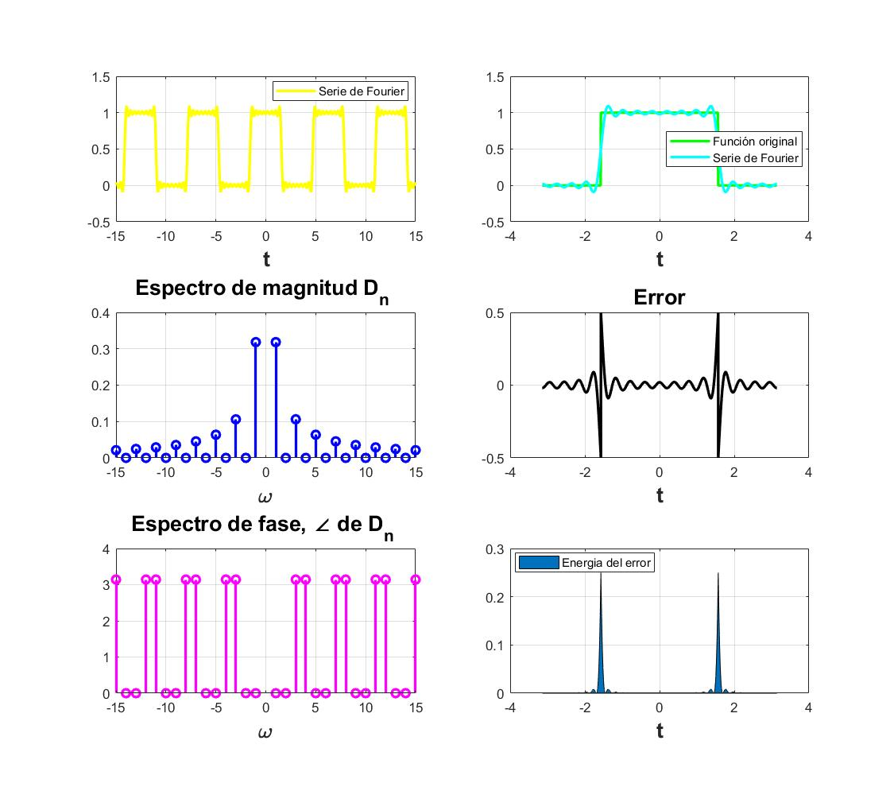
Ejemplo 6.5
d0=0.504;
dn=@(n) 0.504/(1+4*n*j);
t0=0;
tf=pi;
f=@(t) exp(-t/2);
armo=4;
a=-7;
b=7;
sfc(t0,tf,dn,d0,f,armo,a,b)
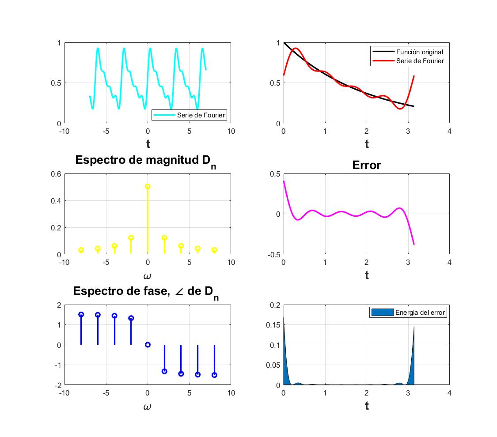
d0=0.504; dn=@(n) 0.504/(1+4*n*j); t0=0; tf=pi; f=@(t) exp(-t/2); armo=15; a=-7; b=7; sfc(t0,tf,dn,d0,f,armo,a,b)
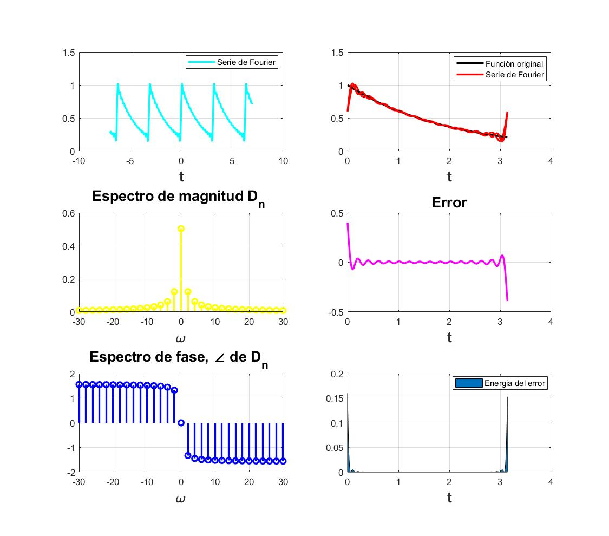
Ejemplo 6.7
d0=0; dn=@(n) 1/3; t0=-3/2; tf=3/2; f=@(t) dirac(t-n*3); armo=4; a=-10; b=10; sfcmodificado(t0,tf,dn,d0,f,armo,a,b)
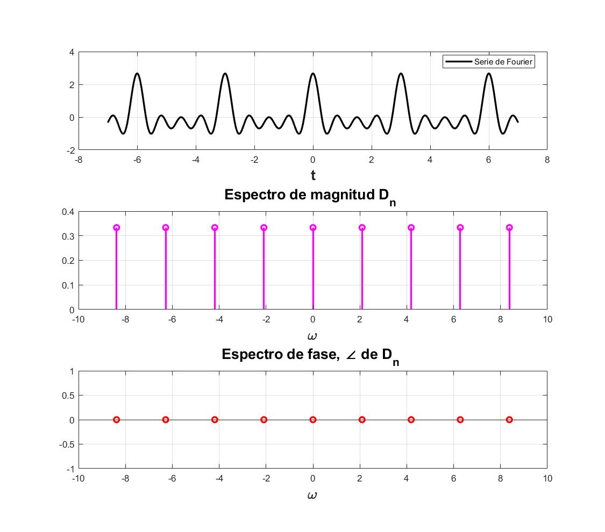
d0=0; dn=@(n) 1/3; t0=-3/2; tf=3/2; f=@(t) dirac(t-n*3); armo=15; a=-10; b=10; sfcmodificado(t0,tf,dn,d0,f,armo,a,b)
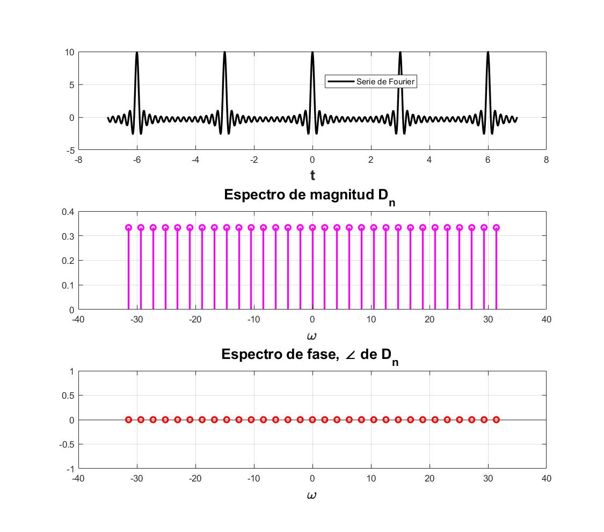
Elabore un código similar al COMPUTER EXAMPLE C6.2 que se encuentra al final de la sección 6.2 de Lathi para el Ejempo 6.2 con los datos indicados anteriormente (no utilice inline)
t = linspace (-2*pi, 2*pi,100); sumterms = zeros(16, length(t)); sumterms(1,:) = 1/2; for n = 1:size(sumterms,1)-1; sumterms(n+1,:) = (2/(pi*n)*sin(pi*n/2))*cos(n*t); end x_N = cumsum(sumterms); figure(1); clf; ind = 0; for N = [0,1:2:size(sumterms, 1)] ind = ind+1; subplot (3,3,ind); plot (t,x_N(N+1),'k',t,X(t),'k--') axis ([-2*pi 2*pi -0.2 1.2]); end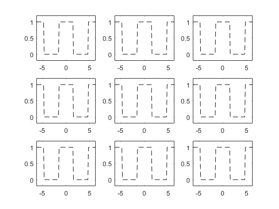
Elabore un código que implemente el algoritmo de trapecio compuesto para , Utilice este código para aproximar del ejemplo de la práctica. Ahora implemente el código COMPUTER EXAMPLE C6.4 que se encuentra al final de la sección 6.6 de Lathi, y calcule nuevamente el los coeficientes del ejemplo propuesto. Muestre una tabla que contenga los coeficientes mencionados calculados con los dos algoritmos y de forma exacta, ¿Qué algortmo aproxima mejor a los coeficientes?, para esto compare los coefientes con el valor absoluto de la resta.
funcion = input('Ingrese la funcion \n f(x)=','s');
a = 0; % LÌmite inferior b = 0.4; % LÌmite superior n = 1; % N?mero de intervalos h = (b-a)/n; % Intervalo de integraciÛn f = 0; almacen{15,2} = []; %ciclo para sacar todos los valores de n for n=1:15 % Algoritmo Trapecio Compuesto for k = 1:n-1 x = a+h*k; f = f+eval(funcion); end % EvaluaciÛn de la funcion f = 2*f; x = a; f = f+eval(funcion); x = b; f = f+eval(funcion); f = (h/2)*(f); almacen{n,1} = n; almacen{n,2} = abs(f); % Muestra de resultados fprintf('El valor aproximado es: %10.15f para N = %d\n\n',abs(f),n) % Dn positivos end clc disp([ ' N ' funcion]) disp(' ')
El valor aproximado es: 9.256277053111708 para N = 8.687067e+00 El valor aproximado es: 8.152860809309161 para N = 7.651505e+00 El valor aproximado es: 7.180979890141050 para N = 6.739389e+00 El valor aproximado es: 6.324954318333285 para N = 5.936005e+00 El valor aproximado es: 5.570973285126005 para N = 5.228389e+00 El valor aproximado es: 4.906872331651241 para N = 4.605127e+00 El valor aproximado es: 4.321937091927717 para N = 4.056162e+00 El valor aproximado es: 3.806730431132856 para N = 3.572638e+00 El valor aproximado es: 3.352940190263023 para N = 3.146753e+00 El valor aproximado es: 2.953245080749109 para N = 2.771637e+00 El valor aproximado es: 2.601196565419389 para N = 2.441237e+00 El valor aproximado es: 2.291114820119614 para N = 2.150224e+00 El valor aproximado es: 2.017997097472486 para N = 1.893901e+00 El valor aproximado es: 1.777437014350409 para N = 1.668134e+00 El valor aproximado es: 1.565553460874574 para N = 1.469281e+00 El valor aproximado es: 1.378927983983779 para N = 1.294132e+00 El valor aproximado es: 1.214549635341967 para N = 1.139862e+00 El valor aproximado es: 1.069766393780473 para N = 1.003982e+00 El valor aproximado es: 0.942242378542119 para N = 8.842997e-01 El valor aproximado es: 0.829920163021030 para N = 7.788847e-01 El valor aproximado es: 0.730987580981601 para N = 6.860359e-01 El valor aproximado es: 0.643848489720079 para N = 6.042554e-01 El valor aproximado es: 0.567097018472139 para N = 5.322237e-01 El valor aproximado es: 0.499494886599499 para N = 4.687787e-01 El valor aproximado es: 0.439951425615375 para N = 4.128969e-01 El valor aproximado es: 0.387505982731306 para N = 3.636765e-01 El valor aproximado es: 0.341312422030500 para N = 3.203236e-01 El valor aproximado es: 0.300625473215216 para N = 2.821387e-01 El valor aproximado es: 0.264788707683767 para N = 2.485057e-01 El valor aproximado es: 0.233223947947504 para N = 2.188820e-01 El valor aproximado es: 0.205421939523121 para N = 1.927896e-01 El valor aproximado es: 0.180934134803940 para N = 1.698077e-01 El valor aproximado es: 0.159365456354119 para N = 1.495654e-01 El valor aproximado es: 0.140367922871364 para N = 1.317361e-01 El valor aproximado es: 0.123635034981733 para N = 1.160322e-01 El valor aproximado es: 0.108896830288942 para N = 1.022003e-01 El valor aproximado es: 0.095915527898147 para N = 9.001725e-02 El valor aproximado es: 0.084481692144480 para N = 7.928654e-02 El valor aproximado es: 0.074410853633352 para N = 6.983500e-02 El valor aproximado es: 0.065540533077568 para N = 6.151015e-02 El valor aproximado es: 0.057727619914931 para N = 5.417769e-02 El valor aproximado es: 0.050846063413899 para N = 4.771931e-02 El valor aproximado es: 0.044784839016402 para N = 4.203082e-02 El valor aproximado es: 0.039446157107549 para N = 3.702044e-02 El valor aproximado es: 0.034743885313143 para N = 3.260733e-02 El valor aproximado es: 0.030602158870929 para N = 2.872030e-02 El valor aproximado es: 0.026954156655799 para N = 2.529663e-02 El valor aproximado es: 0.023741023111788 para N = 2.228108e-02 El valor aproximado es: 0.020910918697700 para N = 1.962501e-02 El valor aproximado es: 0.018418183526585 para N = 1.728557e-02 El valor aproximado es: 1.000000000000000 para N = El valor aproximado es: 22.215064927468095 para N = 2.084896e+01 El valor aproximado es: 19.566865942341988 para N = 1.836361e+01 El valor aproximado es: 17.234351736338521 para N = 1.617453e+01 El valor aproximado es: 15.179890363999883 para N = 1.424641e+01 El valor aproximado es: 13.370335884302410 para N = 1.254813e+01 El valor aproximado es: 11.776493595962977 para N = 1.105230e+01 El valor aproximado es: 10.372649020626522 para N = 9.734789e+00 El valor aproximado es: 9.136153034718854 para N = 8.574330e+00 El valor aproximado es: 8.047056456631257 para N = 7.552207e+00 El valor aproximado es: 7.087788193797860 para N = 6.651928e+00 El valor aproximado es: 6.242871757006533 para N = 5.858970e+00 El valor aproximado es: 5.498675568287074 para N = 5.160537e+00 El valor aproximado es: 4.843193033933968 para N = 4.545364e+00 El valor aproximado es: 4.265848834440980 para N = 4.003523e+00 El valor aproximado es: 3.757328306098977 para N = 3.526273e+00 El valor aproximado es: 3.309427161561069 para N = 3.105916e+00 El valor aproximado es: 2.914919124820720 para N = 2.735668e+00 El valor aproximado es: 2.567439345073135 para N = 2.409556e+00 El valor aproximado es: 2.261381708501085 para N = 2.122319e+00 El valor aproximado es: 1.991808391250472 para N = 1.869323e+00 El valor aproximado es: 1.754370194355842 para N = 1.646486e+00 El valor aproximado es: 1.545236375328191 para N = 1.450213e+00 El valor aproximado es: 1.361032844333135 para N = 1.277337e+00 El valor aproximado es: 1.198787727838798 para N = 1.125069e+00 El valor aproximado es: 1.055883421476900 para N = 9.909524e-01 El valor aproximado es: 0.930014358555134 para N = 8.728236e-01 El valor aproximado es: 0.819149812873200 para N = 7.687766e-01 El valor aproximado es: 0.721501135716519 para N = 6.771328e-01 El valor aproximado es: 0.635492898441041 para N = 5.964136e-01 El valor aproximado es: 0.559737475074010 para N = 5.253167e-01 El valor aproximado es: 0.493012654855491 para N = 4.626951e-01 El valor aproximado es: 0.434241923529457 para N = 4.075385e-01 El valor aproximado es: 0.382477095249885 para N = 3.589569e-01 El valor aproximado es: 0.336883014891275 para N = 3.161666e-01 El valor aproximado es: 0.296724083956159 para N = 2.784772e-01 El valor aproximado es: 0.261352392693462 para N = 2.452807e-01 El valor aproximado es: 0.230197266955552 para N = 2.160414e-01 El valor aproximado es: 0.202756061146752 para N = 1.902877e-01 El valor aproximado es: 0.178586048720046 para N = 1.676040e-01 El valor aproximado es: 0.157297279386163 para N = 1.476244e-01 El valor aproximado es: 0.138546287795835 para N = 1.300265e-01 El valor aproximado es: 0.122030552193358 para N = 1.145263e-01 El valor aproximado es: 0.107483613639366 para N = 1.008740e-01 El valor aproximado es: 0.094670777058118 para N = 8.884905e-02 El valor aproximado es: 0.083385324751543 para N = 7.825759e-02 El valor aproximado es: 0.073445181290229 para N = 6.892871e-02 El valor aproximado es: 0.064689975973917 para N = 6.071190e-02 El valor aproximado es: 0.056978455468292 para N = 5.347460e-02 El valor aproximado es: 0.050186204874479 para N = 4.710003e-02 El valor aproximado es: 0.044203640463803 para N = 4.148536e-02 El valor aproximado es: 2.000000000000000 para N = El valor aproximado es: 36.654857130322362 para N = 3.440079e+01 El valor aproximado es: 32.285328804864278 para N = 3.029996e+01 El valor aproximado es: 28.436680364958558 para N = 2.668798e+01 El valor aproximado es: 25.046819100599805 para N = 2.350658e+01 El valor aproximado es: 22.061054209098973 para N = 2.070442e+01 El valor aproximado es: 19.431214433338916 para N = 1.823630e+01 El valor aproximado es: 17.114870884033760 para N = 1.606240e+01 El valor aproximado es: 15.074652507286110 para N = 1.414764e+01 El valor aproximado es: 13.277643153441574 para N = 1.246114e+01 El valor aproximado es: 11.694850519766469 para N = 1.097568e+01 El valor aproximado es: 10.300738399060780 para N = 9.667300e+00 El valor aproximado es: 9.072814687673672 para N = 8.514887e+00 El valor aproximado es: 7.991268505991046 para N = 7.499850e+00 El valor aproximado es: 7.038650576827618 para N = 6.605813e+00 El valor aproximado es: 6.199591705063312 para N = 5.818351e+00 El valor aproximado es: 5.460554816575764 para N = 5.124761e+00 El valor aproximado es: 4.809616555954189 para N = 4.513852e+00 El valor aproximado es: 4.236274919370673 para N = 3.975767e+00 El valor aproximado es: 3.731279819026791 para N = 3.501827e+00 El valor aproximado es: 3.286483845563280 para N = 3.084383e+00 El valor aproximado es: 2.894710820687139 para N = 2.716702e+00 El valor aproximado es: 2.549640019291515 para N = 2.392851e+00 El valor aproximado es: 2.245704193149673 para N = 2.107606e+00 El valor aproximado es: 1.977999750934016 para N = 1.856364e+00 El valor aproximado es: 1.742207645436886 para N = 1.635072e+00 El valor aproximado es: 1.534523691615970 para N = 1.440159e+00 El valor aproximado es: 1.351597191240780 para N = 1.268481e+00 El valor aproximado es: 1.190476873932256 para N = 1.117269e+00 El valor aproximado es: 1.048563282427717 para N = 9.840825e-01 El valor aproximado es: 0.923566833872117 para N = 8.667726e-01 El valor aproximado es: 0.813470880511560 para N = 7.634469e-01 El valor aproximado es: 0.716499173823603 para N = 6.724384e-01 El valor aproximado es: 0.631087207162310 para N = 5.922788e-01 El valor aproximado es: 0.555856974570603 para N = 5.216749e-01 El valor aproximado es: 0.489594738527662 para N = 4.594874e-01 El valor aproximado es: 0.431231447944212 para N = 4.047131e-01 El valor aproximado es: 0.379825490476660 para N = 3.564683e-01 El valor aproximado es: 0.334547500892141 para N = 3.139747e-01 El valor aproximado es: 0.294666980388075 para N = 2.765466e-01 El valor aproximado es: 0.259540510987168 para N = 2.435802e-01 El valor aproximado es: 0.228601374863128 para N = 2.145437e-01 El valor aproximado es: 0.201350411119041 para N = 1.889685e-01 El valor aproximado es: 0.177347962504953 para N = 1.664420e-01 El valor aproximado es: 0.156206782145895 para N = 1.466009e-01 El valor aproximado es: 0.137585785840046 para N = 1.291250e-01 El valor aproximado es: 0.121184549128877 para N = 1.137324e-01 El valor aproximado es: 0.106738460356962 para N = 1.001746e-01 El valor aproximado es: 0.094014451522681 para N = 8.823308e-02 El valor aproximado es: 0.082807238042890 para N = 7.771505e-02 El valor aproximado es: 0.072936006765275 para N = 6.845085e-02 El valor aproximado es: 3.000000000000000 para N = El valor aproximado es: 51.687051064575769 para N = 4.850858e+01 El valor aproximado es: 45.525574759182362 para N = 4.272600e+01 El valor aproximado es: 40.098591706547630 para N = 3.763275e+01 El valor aproximado es: 35.318544913573064 para N = 3.314665e+01 El valor aproximado es: 31.108314824143605 para N = 2.919533e+01 El valor aproximado es: 27.399975099940534 para N = 2.571503e+01 El valor aproximado es: 24.133696721324373 para N = 2.264961e+01 El valor aproximado es: 21.256782727445866 para N = 1.994961e+01 El valor aproximado es: 18.722818022428726 para N = 1.757147e+01 El valor aproximado es: 16.490920530903022 para N = 1.547682e+01 El valor aproximado es: 14.525081621301869 para N = 1.363187e+01 El valor aproximado es: 12.793585155547925 para N = 1.200685e+01 El valor aproximado es: 11.268495792286364 para N = 1.057555e+01 El valor aproximado es: 9.925208288132682 para N = 9.314863e+00 El valor aproximado es: 8.742050525523622 para N = 8.204463e+00 El valor aproximado es: 7.699933862565420 para N = 7.226431e+00 El valor aproximado es: 6.782045163749543 para N = 6.364987e+00 El valor aproximado es: 5.973575542870162 para N = 5.606234e+00 El valor aproximado es: 5.261481441779192 para N = 4.937929e+00 El valor aproximado es: 4.634274190309434 para N = 4.349292e+00 El valor aproximado es: 4.081834652201258 para N = 3.830824e+00 El valor aproximado es: 3.595249966596924 para N = 3.374162e+00 El valor aproximado es: 3.166669751148427 para N = 2.971937e+00 El valor aproximado es: 2.789179446771604 para N = 2.617660e+00 El valor aproximado es: 2.456688760636256 para N = 2.305616e+00 El valor aproximado es: 2.163833407571611 para N = 2.030770e+00 El valor aproximado es: 1.905888564618311 para N = 1.788687e+00 El valor aproximado es: 1.678692642433766 para N = 1.575462e+00 El valor aproximado es: 1.478580143706155 para N = 1.387656e+00 El valor aproximado es: 1.302322525338864 para N = 1.222237e+00 El valor aproximado es: 1.147076110297109 para N = 1.076537e+00 El valor aproximado es: 1.010336208745202 para N = 9.482061e-01 El valor aproximado es: 0.889896708281399 para N = 8.351730e-01 El valor aproximado es: 0.783814481313699 para N = 7.356142e-01 El valor aproximado es: 0.690378035337997 para N = 6.479236e-01 El valor aproximado es: 0.608079900333455 para N = 5.706864e-01 El valor aproximado es: 0.535592307783250 para N = 5.026563e-01 El valor aproximado es: 0.471745768934776 para N = 4.427360e-01 El valor aproximado es: 0.415510206688640 para N = 3.899586e-01 El valor aproximado es: 0.365978336705138 para N = 3.434727e-01 El valor aproximado es: 0.322351029604976 para N = 3.025282e-01 El valor aproximado es: 0.283924418103213 para N = 2.664646e-01 El valor aproximado es: 0.250078541067591 para N = 2.347001e-01 El valor aproximado es: 0.220267341288555 para N = 2.067221e-01 El valor aproximado es: 0.194009855588590 para N = 1.820793e-01 El valor aproximado es: 0.170882455135265 para N = 1.603741e-01 El valor aproximado es: 0.150512010765979 para N = 1.412564e-01 El valor aproximado es: 0.132569873056225 para N = 1.244176e-01 El valor aproximado es: 0.116766570007954 para N = 1.095861e-01 El valor aproximado es: 0.102847136812448 para N = 9.652261e-02 El valor aproximado es: 4.000000000000000 para N = El valor aproximado es: 66.956205691388845 para N = 6.283877e+01 El valor aproximado es: 58.974533950218756 para N = 5.534793e+01 El valor aproximado es: 51.944336133324306 para N = 4.875005e+01 El valor aproximado es: 45.752189557095647 para N = 4.293868e+01 El valor aproximado es: 40.298192355287462 para N = 3.782008e+01 El valor aproximado es: 35.494351698232428 para N = 3.331165e+01 El valor aproximado es: 31.263164148168336 para N = 2.934065e+01 El valor aproximado es: 27.536365246642632 para N = 2.584303e+01 El valor aproximado es: 24.253828160286613 para N = 2.276235e+01 El valor aproximado es: 21.362593616106754 para N = 2.004891e+01 El valor aproximado es: 18.816015475617693 para N = 1.765893e+01 El valor aproximado es: 16.573008162817239 para N = 1.555386e+01 El valor aproximado es: 14.597383804276980 para N = 1.369973e+01 El valor aproximado es: 12.857268387005115 para N = 1.206662e+01 El valor aproximado es: 11.324587514582319 para N = 1.062819e+01 El valor aproximado es: 9.974613464945062 para N = 9.361230e+00 El valor aproximado es: 8.785566242209653 para N = 8.245303e+00 El valor aproximado es: 7.738262186050427 para N = 7.262402e+00 El valor aproximado es: 6.815804469422272 para N = 6.396670e+00 El valor aproximado es: 6.003310491228925 para N = 5.634140e+00 El valor aproximado es: 5.287671765788507 para N = 4.962509e+00 El valor aproximado es: 4.657342435239167 para N = 4.370942e+00 El valor aproximado es: 4.102152992820068 para N = 3.849893e+00 El valor aproximado es: 3.613146211706137 para N = 3.390958e+00 El valor aproximado es: 3.182432632331378 para N = 2.986731e+00 El valor aproximado es: 2.803063276685173 para N = 2.630690e+00 El valor aproximado es: 2.468917535999824 para N = 2.317093e+00 El valor aproximado es: 2.174604423049587 para N = 2.040878e+00 El valor aproximado es: 1.915375595901297 para N = 1.797591e+00 El valor aproximado es: 1.687048749873067 para N = 1.583305e+00 El valor aproximado es: 1.485940141734450 para N = 1.394563e+00 El valor aproximado es: 1.308805157517782 para N = 1.228321e+00 El valor aproximado es: 1.152785965083153 para N = 1.081896e+00 El valor aproximado es: 1.015365406882302 para N = 9.529261e-01 El valor aproximado es: 0.894326389043864 para N = 8.393303e-01 El valor aproximado es: 0.787716111578094 para N = 7.392759e-01 El valor aproximado es: 0.693814562604033 para N = 6.511488e-01 El valor aproximado es: 0.611106768296311 para N = 5.735271e-01 El valor aproximado es: 0.538258350842218 para N = 5.051584e-01 El valor aproximado es: 0.474094000069894 para N = 4.449398e-01 El valor aproximado es: 0.417578511416647 para N = 3.918997e-01 El valor aproximado es: 0.367800084310782 para N = 3.451824e-01 El valor aproximado es: 0.323955611509048 para N = 3.040341e-01 El valor aproximado es: 0.285337722053168 para N = 2.677910e-01 El valor aproximado es: 0.251323368801151 para N = 2.358684e-01 El valor aproximado es: 0.221363776408749 para N = 2.077511e-01 El valor aproximado es: 0.194975587585385 para N = 1.829857e-01 El valor aproximado es: 0.171733064781431 para N = 1.611724e-01 El valor aproximado es: 0.151261221491680 para N = 1.419595e-01 El valor aproximado es: 0.133229772357902 para N = 1.250369e-01 El valor aproximado es: 5.000000000000000 para N = El valor aproximado es: 82.320144595225784 para N = 7.725791e+01 El valor aproximado es: 72.506978435942486 para N = 6.804820e+01 El valor aproximado es: 63.863613794176018 para N = 5.993636e+01 El valor aproximado es: 56.250601732837964 para N = 5.279150e+01 El valor aproximado es: 49.545116652871002 para N = 4.649837e+01 El valor aproximado es: 43.638974669200422 para N = 4.095542e+01 El valor aproximado es: 38.436888210833629 para N = 3.607323e+01 El valor aproximado es: 33.854928685454183 para N = 3.177304e+01 El valor aproximado es: 29.819172405692782 para N = 2.798546e+01 El valor aproximado es: 26.264507930937352 para N = 2.464939e+01 El valor aproximado es: 23.133585582763413 para N = 2.171100e+01 El valor aproximado es: 20.375892185844577 para N = 1.912289e+01 El valor aproximado es: 17.946936106545714 para N = 1.684330e+01 El valor aproximado es: 15.807529440904498 para N = 1.483545e+01 El valor aproximado es: 13.923155771080372 para N = 1.306696e+01 El valor aproximado es: 12.263413289880697 para N = 1.150928e+01 El valor aproximado es: 10.801524308935663 para N = 1.013729e+01 El valor aproximado es: 9.513903237103007 para N = 8.928851e+00 El valor aproximado es: 8.379776059021621 para N = 7.864466e+00 El valor aproximado es: 7.380845174617751 para N = 6.926964e+00 El valor aproximado es: 6.500994192205008 para N = 6.101219e+00 El valor aproximado es: 5.726027912416144 para N = 5.373909e+00 El valor aproximado es: 5.043443307960866 para N = 4.733299e+00 El valor aproximado es: 4.442227804279449 para N = 4.169055e+00 El valor aproximado es: 3.912681606624802 para N = 3.672073e+00 El valor aproximado es: 3.446261207061903 para N = 3.234335e+00 El valor aproximado es: 3.035441546582929 para N = 2.848779e+00 El valor aproximado es: 2.673594608511131 para N = 2.509183e+00 El valor aproximado es: 2.354882484463121 para N = 2.210070e+00 El valor aproximado es: 2.074163187634252 para N = 1.946614e+00 El valor aproximado es: 1.826907693832508 para N = 1.714563e+00 El valor aproximado es: 1.609126871830754 para N = 1.510174e+00 El valor aproximado es: 1.417307124157973 para N = 1.330151e+00 El valor aproximado es: 1.248353699981108 para N = 1.171587e+00 El valor aproximado es: 1.099540765507943 para N = 1.031925e+00 El valor aproximado es: 0.968467426364893 para N = 9.089120e-01 El valor aproximado es: 0.853018992430493 para N = 8.005631e-01 El valor aproximado es: 0.751332860185404 para N = 7.051301e-01 El valor aproximado es: 0.661768462137001 para N = 6.210734e-01 El valor aproximado es: 0.582880798493364 para N = 5.470369e-01 El valor aproximado es: 0.513397124056246 para N = 4.818260e-01 El valor aproximado es: 0.452196414207708 para N = 4.243888e-01 El valor aproximado es: 0.398291278702034 para N = 3.737986e-01 El valor aproximado es: 0.350812031466562 para N = 3.292390e-01 El valor aproximado es: 0.308992659399318 para N = 2.899913e-01 El valor aproximado es: 0.272158463789071 para N = 2.554222e-01 El valor aproximado es: 0.239715174968945 para N = 2.249740e-01 El valor aproximado es: 0.211139364583302 para N = 1.981555e-01 El valor aproximado es: 0.185970000782869 para N = 1.745339e-01 El valor aproximado es: 0.163801010102669 para N = 1.537282e-01 El valor aproximado es: 6.000000000000000 para N = El valor aproximado es: 97.721997209872271 para N = 9.171264e+01 El valor aproximado es: 86.072817039541135 para N = 8.077982e+01 El valor aproximado es: 75.812304748657752 para N = 7.115027e+01 El valor aproximado es: 66.774920921468194 para N = 6.266863e+01 El valor aproximado es: 58.814859657030425 para N = 5.519807e+01 El valor aproximado es: 51.803696189238863 para N = 4.861806e+01 El valor aproximado es: 45.628314927827461 para N = 4.282243e+01 El valor aproximado es: 40.189084492111661 para N = 3.771768e+01 El valor aproximado es: 35.398250294118277 para N = 3.322145e+01 El valor aproximado es: 31.178518737618692 para N = 2.926121e+01 El valor aproximado es: 27.461810191041089 para N = 2.577306e+01 El valor aproximado es: 24.188160615175128 para N = 2.270072e+01 El valor aproximado es: 21.304754124925690 para N = 1.999463e+01 El valor aproximado es: 18.765070876814658 para N = 1.761112e+01 El valor aproximado es: 16.528136534554164 para N = 1.551175e+01 El valor aproximado es: 14.557861203838730 para N = 1.366263e+01 El valor aproximado es: 12.822457170968036 para N = 1.203395e+01 El valor aproximado es: 11.293926051304513 para N = 1.059941e+01 El valor aproximado es: 9.947607073403482 para N = 9.335884e+00 El valor aproximado es: 8.761779210994312 para N = 8.222978e+00 El valor aproximado es: 7.717310743753210 para N = 7.242739e+00 El valor aproximado es: 6.797350593007014 para N = 6.379351e+00 El valor aproximado es: 5.987056452489324 para N = 5.618886e+00 El valor aproximado es: 5.273355327908273 para N = 4.949073e+00 El valor aproximado es: 4.644732621957547 para N = 4.359107e+00 El valor aproximado es: 4.091046361943900 para N = 3.839470e+00 El valor aproximado es: 3.603363572846670 para N = 3.381777e+00 El valor aproximado es: 3.173816155910965 para N = 2.978644e+00 El valor aproximado es: 2.795473947571617 para N = 2.623568e+00 El valor aproximado es: 2.462232910686231 para N = 2.310819e+00 El valor aproximado es: 2.168716654194852 para N = 2.035353e+00 El valor aproximado es: 1.910189692359883 para N = 1.792724e+00 El valor aproximado es: 1.682481044142020 para N = 1.579018e+00 El valor aproximado es: 1.481916940091994 para N = 1.390787e+00 El valor aproximado es: 1.305261551075308 para N = 1.224995e+00 El valor aproximado es: 1.149664782568554 para N = 1.078967e+00 El valor aproximado es: 1.012616292259223 para N = 9.503460e-01 El valor aproximado es: 0.891904989085522 para N = 8.370578e-01 El valor aproximado es: 0.785583360288267 para N = 7.372743e-01 El valor aproximado es: 0.691936050940320 para N = 6.493858e-01 El valor aproximado es: 0.609452189027017 para N = 5.719743e-01 El valor aproximado es: 0.536801009580378 para N = 5.037907e-01 El valor aproximado es: 0.472810384595630 para N = 4.437352e-01 El valor aproximado es: 0.416447912339469 para N = 3.908387e-01 El valor aproximado es: 0.366804260951728 para N = 3.442478e-01 El valor aproximado es: 0.323078497612129 para N = 3.032110e-01 El valor aproximado es: 0.284565166578168 para N = 2.670660e-01 El valor aproximado es: 0.250642907615838 para N = 2.352298e-01 El valor aproximado es: 0.220764431197045 para N = 2.071886e-01 El valor aproximado es: 0.194447688727160 para N = 1.824902e-01 El valor aproximado es: 7.000000000000000 para N = El valor aproximado es: 113.139015308842573 para N = 1.061816e+02 El valor aproximado es: 99.652013290289759 para N = 9.352397e+01 El valor aproximado es: 87.772761020591517 para N = 8.237522e+01 El valor aproximado es: 77.309602915253578 para N = 7.255549e+01 El valor aproximado es: 68.093730143820196 para N = 6.390634e+01 El valor aproximado es: 59.976457128905487 para N = 5.628824e+01 El valor aproximado es: 52.826822706552711 para N = 4.957827e+01 El valor aproximado es: 46.529477245907508 para N = 4.366817e+01 El valor aproximado es: 40.982821639751499 para N = 3.846261e+01 El valor aproximado es: 36.097368141040342 para N = 3.387758e+01 El valor aproximado es: 31.794296599771549 para N = 2.983912e+01 El valor aproximado es: 28.004182807026968 para N = 2.628208e+01 El valor aproximado es: 24.665878429750165 para N = 2.314906e+01 El valor aproximado es: 21.725524465529134 para N = 2.038953e+01 El valor aproximado es: 19.135682300818257 para N = 1.795894e+01 El valor aproximado es: 16.854568353405721 para N = 1.581811e+01 El valor aproximado es: 14.845379951122951 para N = 1.393247e+01 El valor aproximado es: 13.075701570765592 para N = 1.227162e+01 El valor aproximado es: 11.516981857698344 para N = 1.080875e+01 El valor aproximado es: 10.144072988565968 para N = 9.520269e+00 El valor aproximado es: 8.934824945354091 para N = 8.385383e+00 El valor aproximado es: 7.869728154963441 para N = 7.385783e+00 El valor aproximado es: 6.931598728772848 para N = 6.505344e+00 El valor aproximado es: 6.105301223959303 para N = 5.729859e+00 El valor aproximado es: 5.377504453706020 para N = 5.046818e+00 El valor aproximado es: 4.736466406628005 para N = 4.445200e+00 El valor aproximado es: 4.171844805382666 para N = 3.915299e+00 El valor aproximado es: 3.674530248086114 para N = 3.448567e+00 El valor aproximado es: 3.236499240498782 para N = 3.037472e+00 El valor aproximado es: 2.850684747854526 para N = 2.675383e+00 El valor aproximado es: 2.510862177862911 para N = 2.356458e+00 El valor aproximado es: 2.211548955375475 para N = 2.075551e+00 El valor aproximado es: 1.947916068489757 para N = 1.828130e+00 El valor aproximado es: 1.715710159007713 para N = 1.610203e+00 El valor aproximado es: 1.511184900283986 para N = 1.418255e+00 El valor aproximado es: 1.331040555338962 para N = 1.249189e+00 El valor aproximado es: 1.172370740088861 para N = 1.100276e+00 El valor aproximado es: 1.032615532790049 para N = 9.691154e-01 El valor aproximado es: 0.909520173182126 para N = 8.535897e-01 El valor aproximado es: 0.801098684996670 para N = 7.518356e-01 El valor aproximado es: 0.705601834930257 para N = 6.622112e-01 El valor aproximado es: 0.621488911143345 para N = 5.832708e-01 El valor aproximado es: 0.547402865969471 para N = 5.137406e-01 El valor aproximado es: 0.482148421796182 para N = 4.524990e-01 El valor aproximado es: 0.424672786885835 para N = 3.985578e-01 El valor aproximado es: 0.374048670012280 para N = 3.510467e-01 El valor aproximado es: 0.329459319877656 para N = 3.091994e-01 El valor aproximado es: 0.290185347940641 para N = 2.723406e-01 El valor aproximado es: 0.255593122060414 para N = 2.398756e-01 El valor aproximado es: 0.225124543703541 para N = 2.112806e-01 El valor aproximado es: 8.000000000000000 para N = El valor aproximado es: 128.562099601542400 para N = 1.206562e+02 El valor aproximado es: 113.236552599898346 para N = 1.062731e+02 El valor aproximado es: 99.737923419506075 para N = 9.360459e+01 El valor aproximado es: 87.848430031101017 para N = 8.244624e+01 El valor aproximado es: 77.376251623662100 para N = 7.261804e+01 El valor aproximado es: 68.152433836423384 para N = 6.396144e+01 El valor aproximado es: 60.028162909970526 para N = 5.633676e+01 El valor aproximado es: 52.872364778558705 para N = 4.962101e+01 El valor aproximado es: 46.569590368267811 para N = 4.370582e+01 El valor aproximado es: 41.018152983158117 para N = 3.849576e+01 El valor aproximado es: 36.128487728683119 para N = 3.390679e+01 El valor aproximado es: 31.821706503887313 para N = 2.986485e+01 El valor aproximado es: 28.028325249152438 para N = 2.630474e+01 El valor aproximado es: 24.687142915365332 para N = 2.316902e+01 El valor aproximado es: 21.744254068198469 para N = 2.040710e+01 El valor aproximado es: 19.152179197216295 para N = 1.797443e+01 El valor aproximado es: 16.869098698526887 para N = 1.583174e+01 El valor aproximado es: 14.858178172330497 para N = 1.394448e+01 El valor aproximado es: 13.086974149958406 para N = 1.228220e+01 El valor aproximado es: 11.526910662615661 para N = 1.081807e+01 El valor aproximado es: 10.152818206976043 para N = 9.528476e+00 El valor aproximado es: 8.942527669466092 para N = 8.392612e+00 El valor aproximado es: 7.876512657758397 para N = 7.392151e+00 El valor aproximado es: 6.937574468979213 para N = 6.510952e+00 El valor aproximado es: 6.110564612020784 para N = 5.734799e+00 El valor aproximado es: 5.382140407232954 para N = 5.051169e+00 El valor aproximado es: 4.740549720427565 para N = 4.449032e+00 El valor aproximado es: 4.175441358171390 para N = 3.918675e+00 El valor aproximado es: 3.677698065353417 para N = 3.451540e+00 El valor aproximado es: 3.239289430669348 para N = 3.040091e+00 El valor aproximado es: 2.853142326853256 para N = 2.677690e+00 El valor aproximado es: 2.513026795385652 para N = 2.358490e+00 El valor aproximado es: 2.213455534582971 para N = 2.077340e+00 El valor aproximado es: 1.949595369445365 para N = 1.829706e+00 El valor aproximado es: 1.717189274949191 para N = 1.611592e+00 El valor aproximado es: 1.512487694736067 para N = 1.419478e+00 El valor aproximado es: 1.332188047118863 para N = 1.250266e+00 El valor aproximado es: 1.173381442416340 para N = 1.101225e+00 El valor aproximado es: 1.033505751973021 para N = 9.699509e-01 El valor aproximado es: 0.910304271696778 para N = 8.543256e-01 El valor aproximado es: 0.801789313206484 para N = 7.524837e-01 El valor aproximado es: 0.706210135182431 para N = 6.627821e-01 El valor aproximado es: 0.622024697535410 para N = 5.837736e-01 El valor aproximado es: 0.547874782686416 para N = 5.141835e-01 El valor aproximado es: 0.482564082572621 para N = 4.528891e-01 El valor aproximado es: 0.425038897843269 para N = 3.989014e-01 El valor aproximado es: 0.374371137853249 para N = 3.513494e-01 El valor aproximado es: 0.329743347182350 para N = 3.094660e-01 El valor aproximado es: 0.290435517103462 para N = 2.725753e-01 El valor aproximado es: 0.255813469220678 para N = 2.400824e-01 El valor aproximado es: 9.000000000000000 para N = El valor aproximado es: 143.987610371734064 para N = 1.351332e+02 El valor aproximado es: 126.823229133050958 para N = 1.190243e+02 El valor aproximado es: 111.704968269212941 para N = 1.048357e+02 El valor aproximado es: 98.388915195773279 para N = 9.233854e+01 El valor aproximado es: 86.660233500724871 para N = 8.133111e+01 El valor aproximado es: 76.329696851081778 para N = 7.163584e+01 El valor aproximado es: 67.230636083265367 para N = 6.309632e+01 El valor aproximado es: 59.216250222752038 para N = 5.557478e+01 El valor aproximado es: 52.157238049937362 para N = 4.894986e+01 El valor aproximado es: 45.939712000754334 para N = 4.311467e+01 El valor aproximado es: 40.463360745667138 para N = 3.797509e+01 El valor aproximado es: 35.639830802751064 para N = 3.344818e+01 El valor aproximado es: 31.391301074385833 para N = 2.946091e+01 El valor aproximado es: 27.649227309650215 para N = 2.594895e+01 El valor aproximado es: 24.353236236025126 para N = 2.285565e+01 El valor aproximado es: 21.450151518724297 para N = 2.013109e+01 El valor aproximado es: 18.893135832830428 para N = 1.773131e+01 El valor aproximado es: 16.640935206736930 para N = 1.561761e+01 El valor aproximado es: 14.657213445404551 para N = 1.375588e+01 El valor aproximado es: 12.909965895256569 para N = 1.211607e+01 El valor aproximado es: 11.371003092606426 para N = 1.067175e+01 El valor aproximado es: 10.015495964987231 para N = 9.399598e+00 El valor aproximado es: 8.821575247824757 para N = 8.279097e+00 El valor aproximado es: 7.769978653586675 para N = 7.292168e+00 El valor aproximado es: 6.843740100962066 para N = 6.422888e+00 El valor aproximado es: 6.027915990206239 para N = 5.657233e+00 El valor aproximado es: 5.309344108476026 para N = 4.982849e+00 El valor aproximado es: 4.676431275420716 para N = 4.388857e+00 El valor aproximado es: 4.118966302979038 para N = 3.865673e+00 El valor aproximado es: 3.627955251742782 para N = 3.404856e+00 El valor aproximado es: 3.195476325972514 para N = 2.998972e+00 El valor aproximado es: 2.814552066193664 para N = 2.641473e+00 El valor aproximado es: 2.479036777374374 para N = 2.326590e+00 El valor aproximado es: 2.183517376491790 para N = 2.049243e+00 El valor aproximado es: 1.923226059797005 para N = 1.804958e+00 El valor aproximado es: 1.693963380783852 para N = 1.589794e+00 El valor aproximado es: 1.492030497829010 para N = 1.400279e+00 El valor aproximado es: 1.314169498411336 para N = 1.233355e+00 El valor aproximado es: 1.157510837122732 para N = 1.086330e+00 El valor aproximado es: 1.019527039454388 para N = 9.568318e-01 El valor aproximado es: 0.897991924431906 para N = 8.427704e-01 El valor aproximado es: 0.790944688211965 para N = 7.423060e-01 El valor aproximado es: 0.696658269178188 para N = 6.538176e-01 El valor aproximado es: 0.613611484150058 para N = 5.758778e-01 El valor aproximado es: 0.540464486160478 para N = 5.072289e-01 El valor aproximado es: 0.476037147846593 para N = 4.467635e-01 El valor aproximado es: 0.419290021699286 para N = 3.935060e-01 El valor aproximado es: 0.369307569990822 para N = 3.465972e-01 El valor aproximado es: 0.325283393818381 para N = 3.052803e-01 El valor aproximado es: 0.286507222954117 para N = 2.688886e-01 El valor aproximado es: 10.000000000000000 para N = El valor aproximado es: 159.414091732922458 para N = 1.496110e+02 El valor aproximado es: 140.410760555621152 para N = 1.317763e+02 El valor aproximado es: 123.672766099236753 para N = 1.160676e+02 El valor aproximado es: 108.930063579975453 para N = 1.022315e+02 El valor aproximado es: 95.944799536675973 para N = 9.004473e+01 El valor aproximado es: 84.507474388596393 para N = 7.931073e+01 El valor aproximado es: 74.433562444511026 para N = 6.985631e+01 El valor aproximado es: 65.560534831562236 para N = 6.152893e+01 El valor aproximado es: 57.745237312868213 para N = 5.419423e+01 El valor aproximado es: 50.861580688541935 para N = 4.773388e+01 El valor aproximado es: 44.798506517880135 para N = 4.204365e+01 El valor aproximado es: 39.458195342416168 para N = 3.703173e+01 El valor aproximado es: 34.754488501951684 para N = 3.261728e+01 El valor aproximado es: 30.611498081714583 para N = 2.872906e+01 El valor aproximado es: 26.962382564030364 para N = 2.530435e+01 El valor aproximado es: 23.748268431311278 para N = 2.228788e+01 El valor aproximado es: 20.917300321893812 para N = 1.963100e+01 El valor aproximado es: 18.423804414279974 para N = 1.729084e+01 El valor aproximado es: 16.227551542125127 para N = 1.522965e+01 El valor aproximado es: 14.293108151333962 para N = 1.341416e+01 El valor aproximado es: 12.589264627840180 para N = 1.181509e+01 El valor aproximado es: 11.088531772915767 para N = 1.040665e+01 El valor aproximado es: 9.766697302323442 para N = 9.166100e+00 El valor aproximado es: 8.602435214029159 para N = 8.073433e+00 El valor aproximado es: 7.576961722153953 para N = 7.111021e+00 El valor aproximado es: 6.673732206126861 para N = 6.263335e+00 El valor aproximado es: 5.878174285725909 para N = 5.516699e+00 El valor aproximado es: 5.177452715535662 para N = 4.859068e+00 El valor aproximado es: 4.560262305713052 para N = 4.279831e+00 El valor aproximado es: 4.016645528119660 para N = 3.769644e+00 El valor aproximado es: 3.537831865143339 para N = 3.320275e+00 El valor aproximado es: 3.116096309320809 para N = 2.924474e+00 El valor aproximado es: 2.744634730845055 para N = 2.575855e+00 El valor aproximado es: 2.417454102181726 para N = 2.268794e+00 El valor aproximado es: 2.129275808717864 para N = 1.998337e+00 El valor aproximado es: 1.875450485491908 para N = 1.760121e+00 El valor aproximado es: 1.651883006011216 para N = 1.550301e+00 El valor aproximado es: 1.454966412953814 para N = 1.365494e+00 El valor aproximado es: 1.281523724815969 para N = 1.202717e+00 El valor aproximado es: 1.128756679635000 para N = 1.059344e+00 El valor aproximado es: 0.994200588837006 para N = 9.330628e-01 El valor aproximado es: 0.875684572837677 para N = 8.218348e-01 El valor aproximado es: 0.771296536851702 para N = 7.238661e-01 El valor aproximado es: 0.679352321843065 para N = 6.375759e-01 El valor aproximado es: 0.598368532908764 para N = 5.615722e-01 El valor aproximado es: 0.527038606718852 para N = 4.946287e-01 El valor aproximado es: 0.464211731893499 para N = 4.356653e-01 El valor aproximado es: 0.408874282225999 para N = 3.837308e-01 El valor aproximado es: 0.360133463202048 para N = 3.379873e-01 El valor aproximado es: 0.317202907974077 para N = 2.976967e-01 El valor aproximado es: 11.000000000000000 para N = El valor aproximado es: 174.840961330509543 para N = 1.640892e+02 El valor aproximado es: 153.998633933958416 para N = 1.445286e+02 El valor aproximado es: 135.640865121387321 para N = 1.272997e+02 El valor aproximado es: 119.471477251989612 para N = 1.121246e+02 El valor aproximado es: 105.229599236182423 para N = 9.875856e+01 El valor aproximado es: 92.685457735253479 para N = 8.698582e+01 El valor aproximado es: 81.636670080936995 para N = 7.661647e+01 El valor aproximado es: 71.904979106219173 para N = 6.748322e+01 El valor aproximado es: 63.333377208303574 para N = 5.943873e+01 El valor aproximado es: 55.783573244406092 para N = 5.235319e+01 El valor aproximado es: 49.133761392184724 para N = 4.611231e+01 El valor aproximado es: 43.276655978401827 para N = 4.061538e+01 El valor aproximado es: 38.117760570450507 para N = 3.577373e+01 El valor aproximado es: 33.573843404890738 para N = 3.150924e+01 El valor aproximado es: 29.571594556107030 para N = 2.775311e+01 El valor aproximado es: 26.046443180329845 para N = 2.444473e+01 El valor aproximado es: 22.941515752861136 para N = 2.153074e+01 El valor aproximado es: 20.206718491077666 para N = 1.896412e+01 El valor aproximado es: 17.797929159355476 para N = 1.670346e+01 El valor aproximado es: 15.676285216785946 para N = 1.471228e+01 El valor aproximado es: 13.807556822915281 para N = 1.295847e+01 El valor aproximado es: 12.161594585807260 para N = 1.141372e+01 El valor aproximado es: 10.711843142595054 para N = 1.005312e+01 El valor aproximado es: 9.434912724805649 para N = 8.854718e+00 El valor aproximado es: 8.310201796246083 para N = 7.799170e+00 El valor aproximado es: 7.319564675226414 para N = 6.869452e+00 El valor aproximado es: 6.447018778656363 para N = 6.050563e+00 El valor aproximado es: 5.678486764796856 para N = 5.329291e+00 El valor aproximado es: 5.001569414490426 para N = 4.694001e+00 El valor aproximado es: 4.405345586617915 para N = 4.134441e+00 El valor aproximado es: 3.880196020334790 para N = 3.641585e+00 El valor aproximado es: 3.417648141375607 para N = 3.207482e+00 El valor aproximado es: 3.010239368587445 para N = 2.825126e+00 El valor aproximado es: 2.651396715329064 para N = 2.488351e+00 El valor aproximado es: 2.335330743267940 para N = 2.191721e+00 El valor aproximado es: 2.056942157664073 para N = 1.930452e+00 El valor aproximado es: 1.811739537182244 para N = 1.700328e+00 El valor aproximado es: 1.595766870915285 para N = 1.497636e+00 El valor aproximado es: 1.405539733526616 para N = 1.319107e+00 El valor aproximado es: 1.237989068784813 para N = 1.161860e+00 El valor aproximado es: 1.090411674513977 para N = 1.023357e+00 El valor aproximado es: 0.960426590101861 para N = 9.013657e-01 El valor aproximado es: 0.845936682937509 para N = 7.939163e-01 El valor aproximado es: 0.745094814027817 para N = 6.992756e-01 El valor aproximado es: 0.656274036921221 para N = 6.159168e-01 El valor aproximado es: 0.578041349138684 para N = 5.424950e-01 El valor aproximado es: 0.509134572626982 para N = 4.778256e-01 El valor aproximado es: 0.448441990231858 para N = 4.208653e-01 El valor aproximado es: 0.394984409653214 para N = 3.706951e-01 El valor aproximado es: 0.347899365508646 para N = 3.265055e-01 El valor aproximado es: 12.000000000000000 para N = El valor aproximado es: 190.267986222656106 para N = 1.785676e+02 El valor aproximado es: 167.586644094602462 para N = 1.572810e+02 El valor aproximado es: 147.609084620388558 para N = 1.385319e+02 El valor aproximado es: 130.012997039128578 para N = 1.220179e+02 El valor aproximado es: 114.514492401110999 para N = 1.074725e+02 El valor aproximado es: 100.863523405567548 para N = 9.466098e+01 El valor aproximado es: 88.839850227435093 para N = 8.337669e+01 El valor aproximado es: 78.249487247214816 para N = 7.343758e+01 El valor aproximado es: 68.921573356740723 para N = 6.468328e+01 El valor aproximado es: 60.705615347500867 para N = 5.697256e+01 El valor aproximado es: 53.469059907325949 para N = 5.018101e+01 El valor aproximado es: 47.095155052915693 para N = 4.419906e+01 El valor aproximado es: 41.481066495322530 para N = 3.893021e+01 El valor aproximado es: 36.536218548511606 para N = 3.428944e+01 El valor aproximado es: 32.180832813812266 para N = 3.020189e+01 El valor aproximado es: 28.344641063921060 para N = 2.660160e+01 El valor aproximado es: 24.965751560590032 para N = 2.343050e+01 El valor aproximado es: 21.989650515577210 para N = 2.063741e+01 El valor aproximado es: 19.368322584789738 para N = 1.817728e+01 El valor aproximado es: 17.059476205987767 para N = 1.601041e+01 El valor aproximado es: 15.025861281926922 para N = 1.410185e+01 El valor aproximado es: 13.234668200683936 para N = 1.242081e+01 El valor aproximado es: 11.656998497175840 para N = 1.094016e+01 El valor aproximado es: 10.267398615715745 para N = 9.636010e+00 El valor aproximado es: 9.043449251498311 para N = 8.487327e+00 El valor aproximado es: 7.965403645597540 para N = 7.475575e+00 El valor aproximado es: 7.015868997859046 para N = 6.584432e+00 El valor aproximado es: 6.179525857716548 para N = 5.799519e+00 El valor aproximado es: 5.442880965685141 para N = 5.108174e+00 El valor aproximado es: 4.794049557964721 para N = 4.499242e+00 El valor aproximado es: 4.222563621934492 para N = 3.962899e+00 El valor aproximado es: 3.719203009001466 para N = 3.490493e+00 El valor aproximado es: 3.275846680038520 para N = 3.074400e+00 El valor aproximado es: 2.885341683459364 para N = 2.707909e+00 El valor aproximado es: 2.541387752069704 para N = 2.385106e+00 El valor aproximado es: 2.238435656821881 para N = 2.100784e+00 El valor aproximado es: 1.971597677548802 para N = 1.850355e+00 El valor aproximado es: 1.736568746244354 para N = 1.629779e+00 El valor aproximado es: 1.529556990644227 para N = 1.435498e+00 El valor aproximado es: 1.347222557522305 para N = 1.264376e+00 El valor aproximado es: 1.186623728699697 para N = 1.113653e+00 El valor aproximado es: 1.045169460421434 para N = 9.808973e-01 El valor aproximado es: 0.920577580388235 para N = 8.639672e-01 El valor aproximado es: 0.810837968009267 para N = 7.609759e-01 El valor aproximado es: 0.714180123839347 para N = 6.702620e-01 El valor aproximado es: 0.629044604977545 para N = 5.903618e-01 El valor aproximado es: 0.554057865576174 para N = 5.199864e-01 El valor aproximado es: 0.488010096545990 para N = 4.580002e-01 El valor aproximado es: 0.429835706931380 para N = 4.034032e-01 El valor aproximado es: 0.378596132049058 para N = 3.553146e-01 El valor aproximado es: 13.000000000000000 para N = El valor aproximado es: 205.695073232626441 para N = 1.930460e+02 El valor aproximado es: 181.174708968169256 para N = 1.700335e+02 El valor aproximado es: 159.577352310130095 para N = 1.497642e+02 El valor aproximado es: 140.554559272317448 para N = 1.319112e+02 El valor aproximado es: 123.799422952208431 para N = 1.161864e+02 El valor aproximado es: 109.041622005344408 para N = 1.023362e+02 El valor aproximado es: 96.043059377962052 para N = 9.013694e+01 El valor aproximado es: 84.594020934745942 para N = 7.939196e+01 El valor aproximado es: 74.509792006378603 para N = 6.992785e+01 El valor aproximado es: 65.627677269487876 para N = 6.159194e+01 El valor aproximado es: 57.804375878801842 para N = 5.424973e+01 El valor aproximado es: 50.913669502840854 para N = 4.778276e+01 El valor aproximado es: 44.844385962743829 para N = 4.208670e+01 El valor aproximado es: 39.498605620310357 para N = 3.706966e+01 El valor aproximado es: 34.790081577768937 para N = 3.265068e+01 El valor aproximado es: 30.642848201341323 para N = 2.875848e+01 El valor aproximado es: 26.989995519023548 para N = 2.533026e+01 El valor aproximado es: 23.772589719157502 para N = 2.231071e+01 El valor aproximado es: 20.938722333505559 para N = 1.965111e+01 El valor aproximado es: 18.442672764689526 para N = 1.730855e+01 El valor aproximado es: 16.244170646513179 para N = 1.524524e+01 El valor aproximado es: 14.307746136354687 para N = 1.342790e+01 El valor aproximado es: 12.602157657480292 para N = 1.182719e+01 El valor aproximado es: 11.099887858679281 para N = 1.041731e+01 El valor aproximado es: 9.776699659214579 para N = 9.175487e+00 El valor aproximado es: 8.611245216477297 para N = 8.081701e+00 El valor aproximado es: 7.584721507570618 para N = 7.118303e+00 El valor aproximado es: 6.680566968099642 para N = 6.269749e+00 El valor aproximado es: 5.884194293846795 para N = 5.522349e+00 El valor aproximado es: 5.182755094450949 para N = 4.864044e+00 El valor aproximado es: 4.564932602097495 para N = 4.284215e+00 El valor aproximado es: 4.020759090855750 para N = 3.773505e+00 El valor aproximado es: 3.541455060973070 para N = 3.323675e+00 El valor aproximado es: 3.119287593582849 para N = 2.927469e+00 El valor aproximado es: 2.747445590572142 para N = 2.578493e+00 El valor aproximado es: 2.419929886773946 para N = 2.271118e+00 El valor aproximado es: 2.131456461593572 para N = 2.000384e+00 El valor aproximado es: 1.877371188520461 para N = 1.761923e+00 El valor aproximado es: 1.653574747124624 para N = 1.551889e+00 El valor aproximado es: 1.456456486094870 para N = 1.366892e+00 El valor aproximado es: 1.282836170288916 para N = 1.203949e+00 El valor aproximado es: 1.129912671963162 para N = 1.060429e+00 El valor aproximado es: 0.995218778384928 para N = 9.340183e-01 El valor aproximado es: 0.876581386709396 para N = 8.226765e-01 El valor aproximado es: 0.772086443919741 para N = 7.246074e-01 El valor aproximado es: 0.680048066184018 para N = 6.382289e-01 El valor aproximado es: 0.598981339411650 para N = 5.621473e-01 El valor aproximado es: 0.527578362183431 para N = 4.951352e-01 El valor aproximado es: 0.464687144540346 para N = 4.361115e-01 El valor aproximado es: 0.409293022191808 para N = 3.841238e-01 El valor aproximado es: 14.000000000000000 para N = El valor aproximado es: 221.122185089726287 para N = 2.075244e+02 El valor aproximado es: 194.762795726905125 para N = 1.827860e+02 El valor aproximado es: 171.545639276167776 para N = 1.609965e+02 El valor aproximado es: 151.096138483926296 para N = 1.418046e+02 El valor aproximado es: 133.084368457773394 para N = 1.249004e+02 El valor aproximado es: 117.219733776906381 para N = 1.100114e+02 El valor aproximado es: 103.246280130100544 para N = 9.689721e+01 El valor aproximado es: 90.938564840891260 para N = 8.534635e+01 El valor aproximado es: 80.098019656496774 para N = 7.517244e+01 El valor aproximado es: 70.549747119031778 para N = 6.621133e+01 El valor aproximado es: 62.139698832811590 para N = 5.831845e+01 El valor aproximado es: 54.732190102930524 para N = 5.136646e+01 El valor aproximado es: 48.207710847184842 para N = 4.524320e+01 El valor aproximado es: 42.460997463380274 para N = 3.984988e+01 El valor aproximado es: 37.399334544226171 para N = 3.509948e+01 El valor aproximado es: 32.941059040293197 para N = 3.091537e+01 El valor aproximado es: 29.014242737738922 para N = 2.723003e+01 El valor aproximado es: 25.555531794370090 para N = 2.398401e+01 El valor aproximado es: 22.509124611534006 para N = 2.112494e+01 El valor aproximado es: 19.825871551191256 para N = 1.860669e+01 El valor aproximado es: 17.462481973329286 para N = 1.638864e+01 El valor aproximado es: 15.380825800343068 para N = 1.443499e+01 El valor aproximado es: 13.547318340074213 para N = 1.271423e+01 El valor aproximado es: 11.932378442464193 para N = 1.119860e+01 El valor aproximado es: 10.509951247916460 para N = 9.863647e+00 El valor aproximado es: 9.257087827560504 para N = 8.687828e+00 El valor aproximado es: 8.153574933485746 para N = 7.652175e+00 El valor aproximado es: 7.181608885468096 para N = 6.739980e+00 El valor aproximado es: 6.325508332795224 para N = 5.936525e+00 El valor aproximado es: 5.571461256992944 para N = 5.228847e+00 El valor aproximado es: 4.907302133685818 para N = 4.605530e+00 El valor aproximado es: 4.322315658401404 para N = 4.056517e+00 El valor aproximado es: 3.807063869701008 para N = 3.572951e+00 El valor aproximado es: 3.353233880503607 para N = 3.147029e+00 El valor aproximado es: 2.953503760954850 para N = 2.771880e+00 El valor aproximado es: 2.601424409043715 para N = 2.441451e+00 El valor aproximado es: 2.291315503109627 para N = 2.150412e+00 El valor aproximado es: 2.018173857575384 para N = 1.894067e+00 El valor aproximado es: 1.777592703350135 para N = 1.668281e+00 El valor aproximado es: 1.565690590601464 para N = 1.469409e+00 El valor aproximado es: 1.379048766839534 para N = 1.294245e+00 El valor aproximado es: 1.214656019993753 para N = 1.139961e+00 El valor aproximado es: 1.069860096600007 para N = 1.004070e+00 El valor aproximado es: 0.942324911296997 para N = 8.843772e-01 El valor aproximado es: 0.829992857265041 para N = 7.789529e-01 El valor aproximado es: 0.731051609537536 para N = 6.860960e-01 El valor aproximado es: 0.643904885601638 para N = 6.043083e-01 El valor aproximado es: 0.567146691550195 para N = 5.322703e-01 El valor aproximado es: 0.499538638281632 para N = 4.688198e-01 El valor aproximado es: 0.439989961775492 para N = 4.129330e-01 El valor aproximado es: 15.000000000000000 para N = N exp(-t/2)